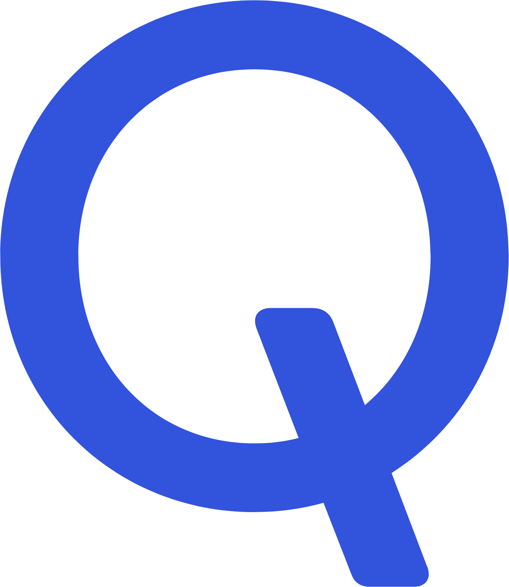

Aug 2025 - Present
Duke University
M.S. in Computer Science (AI/ML)
At Duke, I work across a few different threads:
I work as a Research Assistant with Duke Brain Sciences under
Dr. Andrew Michael
on deep learning techniques for brain fMRI analysis, spatial reasoning in VLMs with
DukeNLP, and language-conditioned failure recovery frameworks for humanoid locomanipulation with Duke Robotics. I also served as a Teaching Assistant for Probabilistic Machine Learning.
May 2024 - Jul 2025

Indian Institute of Science
ML Research Intern. Advisor:
Dr. Chetan Singh Thakur.
(NeuRonICS Lab)
I worked on efficient machine learning for edge systems:
neuromorphic satellite/drone tracking, quantized/ternarized CNNs for radar-based human activity recognition,
model compression for embedded inference, and state-space models such as S4, Mamba,
LMU, and HiPPO across neural decoding and other sequence tasks. Along the way, our team
placed 5th in the IEEE BioCAS 2024 Grand Challenge and 17th in the EEG-AAD 2026
Challenge.
Mar 2024 - Apr 2024
Lamarr
Machine Learning Intern.
I took on this short internship to get a closer look at applied AI in a product setting. I built AI automation tools, including a Draft Bot for generating template-based documents and a SalesGPT agent for scheduled service outreach. I also worked on model finetuning for business-specific workflows.
May 2023 - Jul 2023

Qualcomm
Software Intern.
I built a full-stack memory analysis platform for system-level debugging.
The project moved the workflow from manual log parsing to an automated cloud-native
visualization system, and ended up reducing analysis time by 85% and storage usage by
75%. I was offered a permanent role there, but by then I knew I wanted to move toward
ML research.
Dec 2020 - Apr 2024

National Institute of Technology Karnataka
B.Tech in Computer Science. Advisor:
Dr. Jeny Rajan.
At NITK, I built my foundation in computer science while working on early machine learning projects in breast cancer detection, and autonomous driving. These projects sparked my interest in ML and motivated me to study the field more deeply.